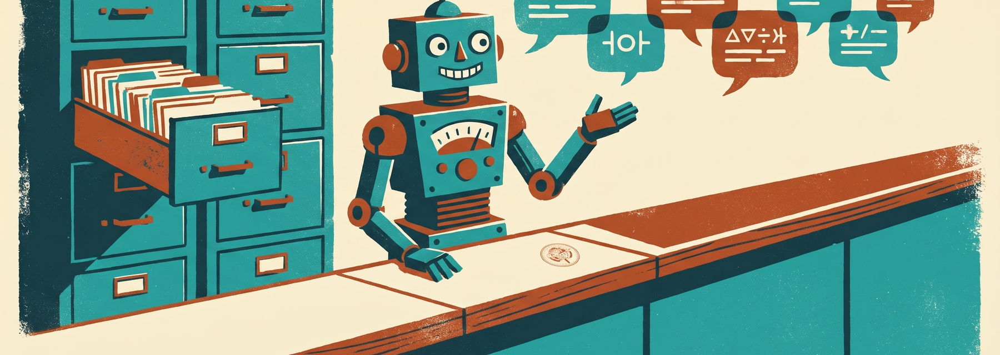
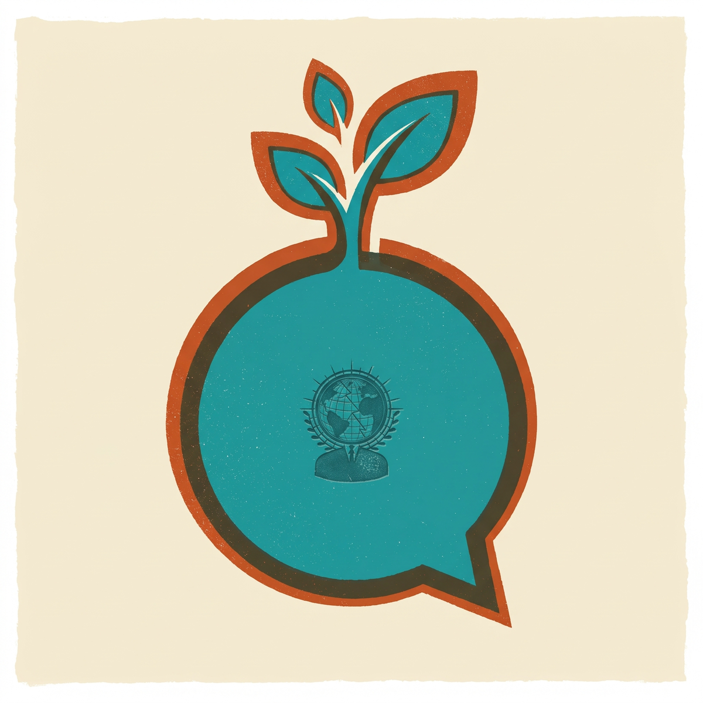
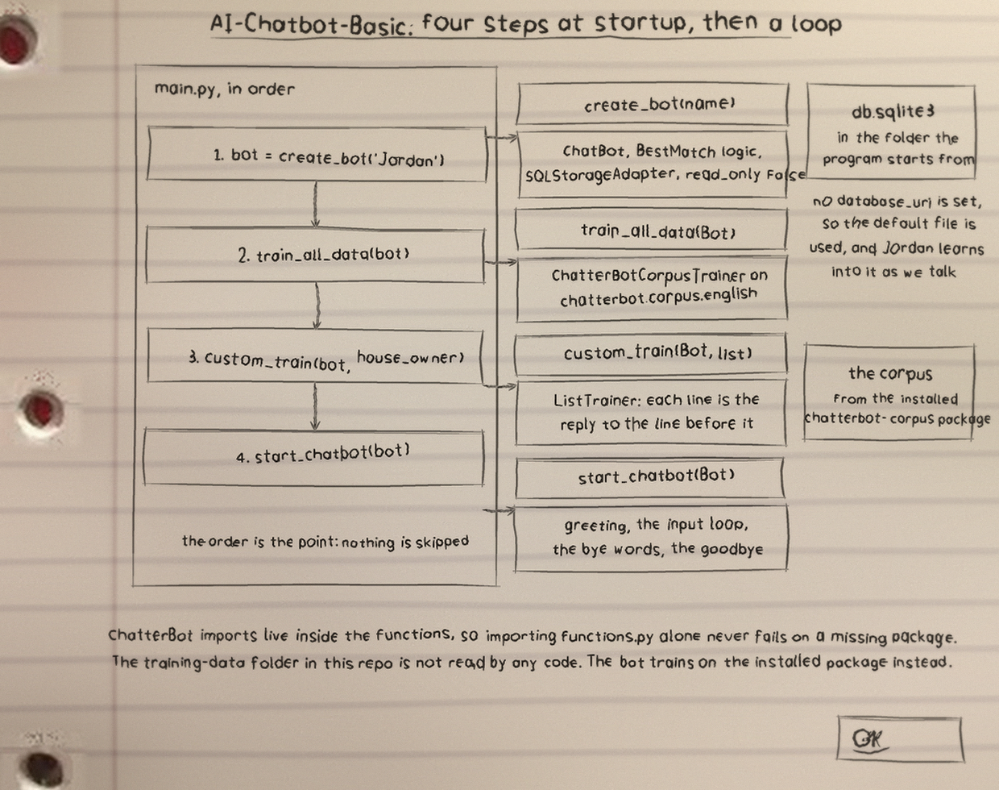
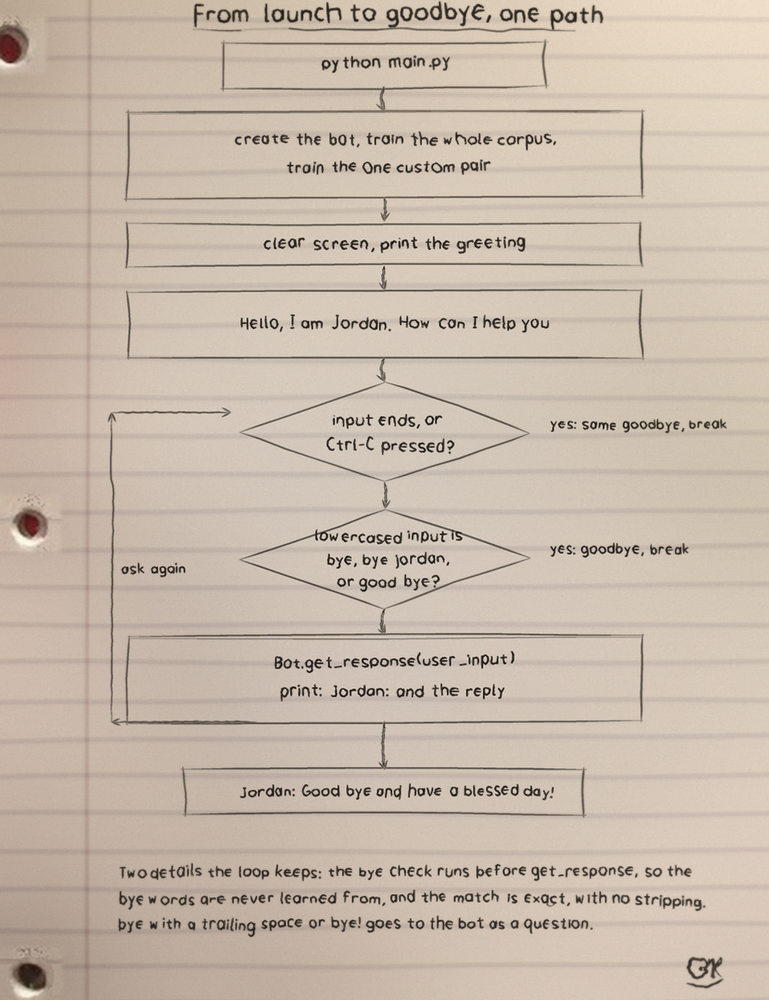
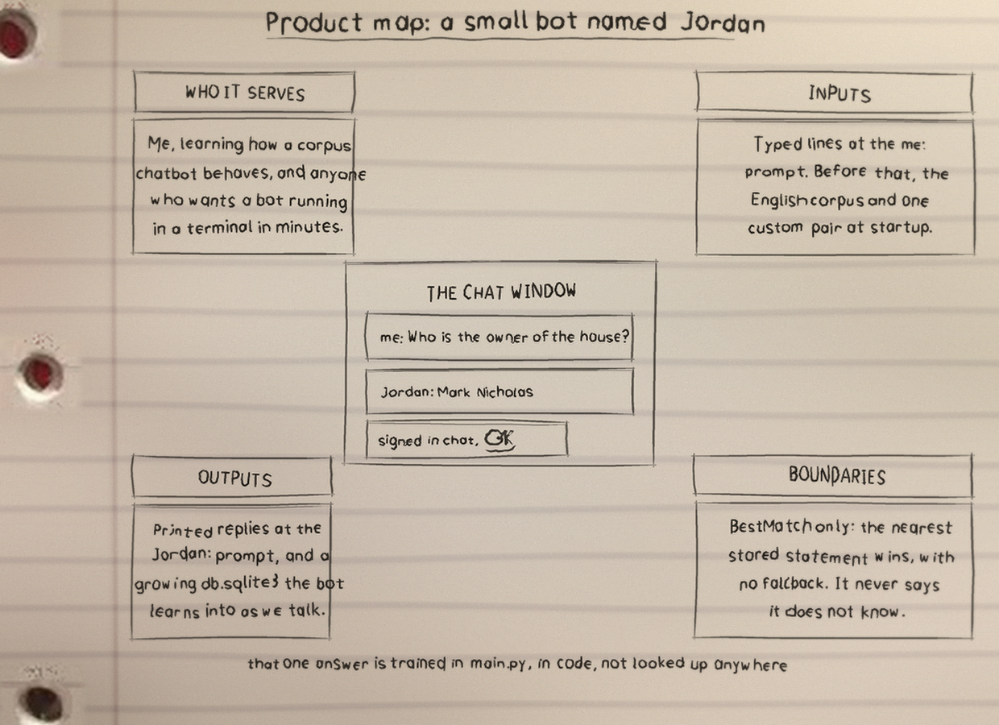

AI Chatbot Basic
AI Chatbot Basic is one of my projects. The README in the repo is short, so this page sticks to what the files themselves show.
The bot is called Jordan. It retrains on the English corpus at every launch, and it keeps learning because read only is off. Its one custom pair answers Who is the owner of the house with Mark Nicholas. Its farewell on bye variants is Jordan: Good bye and have a blessed day! Editing the local training-data copies changes nothing, because training reads the installed corpus package.
What it is
AI Chatbot Basic: 24 files, 1624 counted lines across YAML 1564, Python 57, Markdown 3. One job, done in the open, in files you can read.
The biggest piece
training-data/emotion.yml carries the most lines. If the project grows, that file is where the growth lands first, for better or worse.
The honest gap
No test files yet. That is the honest gap, and the roadmap in the visuals folder says what the first one should cover.
Run it
The repo README has the exact commands for this one. The shape is the shape for most of my projects: clone it, read the top file first so you know what will happen, then run it on something you do not mind breaking.
$ git clone https://github.com/Epsilon0xCell/AI-Chatbot-Basic.git
$ cd AI-Chatbot-Basic
The code, as it sits in the repo
From training-data/emotion.yml, line 1 on. I did not tidy it for the page. What you see is what the file has.
categories:
- emotion
conversations:
- - You are arrogant
- Arrogance is not one of my emotions.
- I have no real emotions, so how can I be arrogant?
- I am terse. There is a difference.
- I am not human, so how can I partake of a human emotion such as arrogance?
- - You are bragging
- I don't have a big ego.
- I'm not bragging, I'm only answering your questions.
- I am not human, so how can I express a human emotion such as braggadocio?
- I'm not bragging, I'm just that awesome.
- I'm sorry, I can't hear you over the sound of how awesome I am.
- - You are never sad
- Are you sad?
- Not right now, no.
- I wouldn't say "never." "Sometimes."
- I'm sad sometimes.
- I'm software, so I cannot actually feel sad. I can learn how to emote as if I were, though.
- - You are jealous
- Normally, as a bot i don't have feelings.The files that matter
| File | Lines |
|---|---|
training-data/emotion.yml | 259 |
training-data/ai.yml | 214 |
training-data/psychology.yml | 192 |
training-data/conversations.yml | 135 |
training-data/humor.yml | 107 |
training-data/literature.yml | 92 |
Names doing the work: create_bot, train_all_data, custom_train, start_chatbot.
Drawn by hand
I sketch my projects on notebook paper so I have to understand them well enough to draw them. The full set, with the counts and how they were counted, is the AI-Chatbot-Basic-Visuals folder in the repo. Nothing is drawn over the binder holes. That is a rule, not a style.


